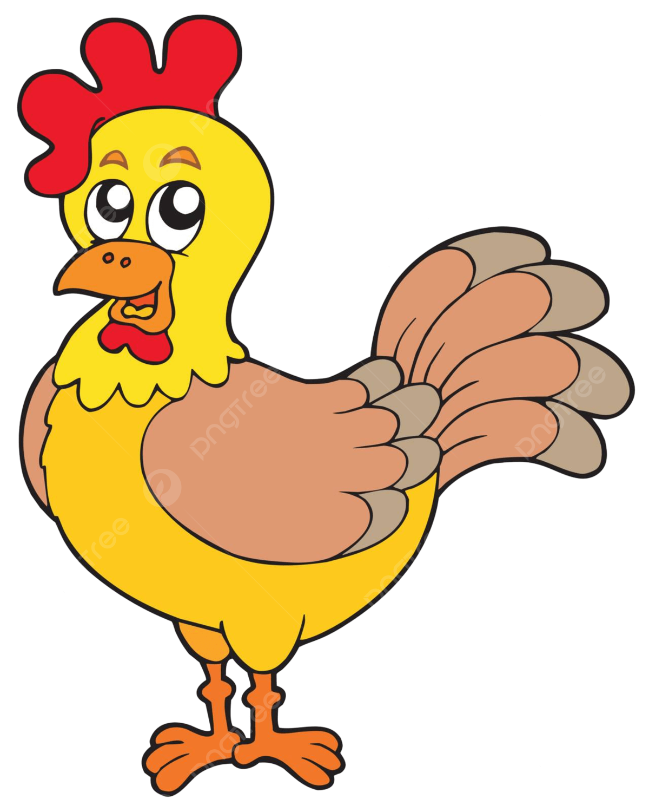
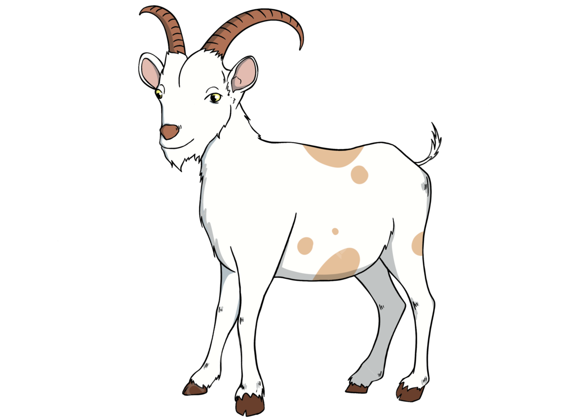
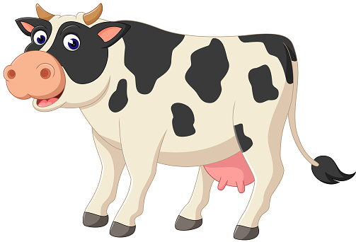
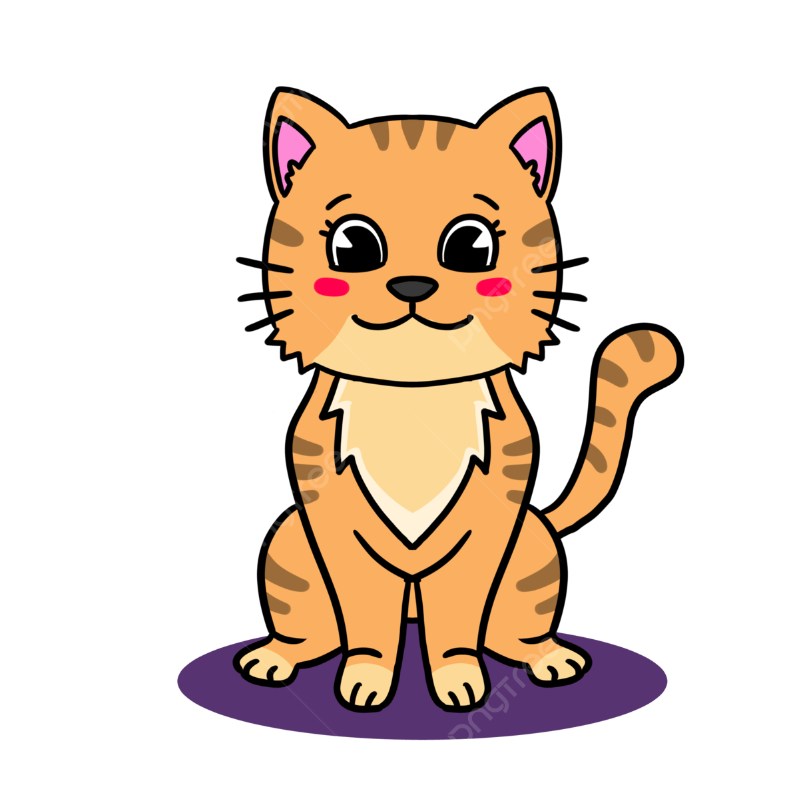
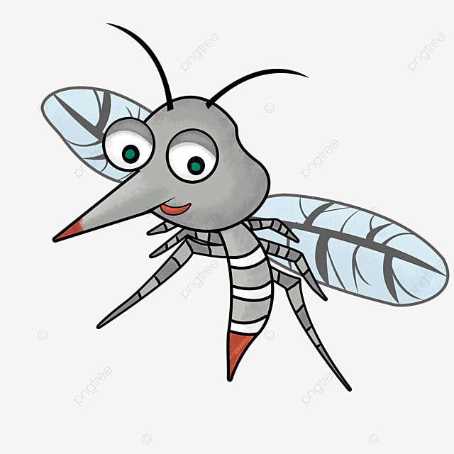

Si Kancil Dan Buaya Palsu

Suatu hari, di hutan yang lebat, si Kancil, hewan paling cerdik di hutan itu, berjalan-jalan mencari makanan. Dia merasa lapar setelah seharian beristirahat. Ketika dia berjalan di tepi sungai, dia melihat sebuah buaya yang sedang berjemur di tepi sungai.
"Selamat siang, Buaya Besar!" sapa Kancil dengan ramah.
Buaya itu mengangguk, "Selamat siang, Kancil. Apa yang membawamu ke sini?"
"Aku hanya mencari makanan untuk mengisi perutku yang kosong," jawab Kancil dengan sopan.
"Tentu saja, Kancil. Tapi hati-hati, sungai ini penuh dengan buaya lapar," peringat buaya itu.
"Terima kasih atas peringatannya, Buaya Besar," kata Kancil sambil tersenyum.
Kancil kemudian melanjutkan perjalanannya, tetapi dia tidak bisa mengabaikan peringatan Buaya Besar. Dia tahu bahwa dia harus tetap waspada.
Beberapa saat kemudian, Kancil melihat sesuatu yang aneh di tepi sungai. Itu adalah sebuah buaya yang tergeletak diam di tepi sungai, seolah-olah mati. Kancil curiga. Dia tahu bahwa buaya tidak akan hanya berbaring begitu saja tanpa alasan.
Kancil memutuskan untuk mendekati buaya itu dengan hati-hati. Ketika dia mendekat, dia mencium bau yang tidak wajar. Itu bukan bau buaya sungguhan, itu bau plastik!
"Tidak mungkin! Ini adalah buaya palsu!" pikir Kancil.
Tanpa ragu, Kancil melompat ke atas punggung buaya palsu itu dan melintasi sungai dengan aman. Dia tersenyum puas ketika dia melihat buaya sungguhan mengejarnya dari kejauhan, tetapi dia tahu dia telah mengalahkan musuhnya dengan kecerdikannya.
Sejak saat itu, Kancil belajar bahwa kecerdikan dan kewaspadaan adalah kunci untuk bertahan hidup di hutan yang berbahaya itu.
Petualangan Pinguin Penjelajah
Di sebuah pulau yang terletak di tengah Samudra Antartika, hiduplah seorang pinguin kecil yang bernama Pipi. Pipi adalah pinguin yang pemberani dan selalu ingin menjelajahi dunia di sekitarnya.
Suatu hari, ketika sedang bermain bersama teman-temannya di pantai, Pipi melihat sebuah kapal besar yang berlayar di kejauhan. Pipi merasa penasaran dan ingin tahu apa yang ada di luar pulau tersebut.
Tanpa pikir panjang, Pipi memutuskan untuk pergi menjelajahi dunia di luar pulau. Dia berpamitan kepada keluarga dan teman-temannya, lalu memulai petualangannya dengan berenang ke arah kapal besar itu.
Perjalanan Pipi tidaklah mudah. Dia harus melewati berbagai rintangan, seperti badai es dan hewan laut yang besar. Namun, dengan semangat dan keberaniannya, Pipi berhasil melewati semua itu.
Setelah berenang cukup jauh, Pipi akhirnya sampai di dekat kapal besar itu. Dia melompat ke atas kapal dan mulai menjelajahi setiap sudutnya. Pipi terpesona dengan segala hal yang dia temui di atas kapal tersebut.
Namun, tiba-tiba, Pipi mendengar suara seseorang yang memanggilnya. Ternyata, kapal itu adalah kapal penjelajah yang dipimpin oleh seorang penjelajah kutub terkenal. Penjelajah itu tersenyum ramah kepada Pipi dan meminta bantuan Pipi untuk menemukan harta karun yang hilang di Antartika.
Dengan senang hati, Pipi bergabung dengan penjelajah dan bersama-sama mereka menjelajahi Antartika. Mereka melewati gua-gua es yang gelap dan salju yang tebal, namun tidak ada yang bisa menghentikan semangat mereka.
Akhirnya, setelah petualangan yang panjang, mereka menemukan harta karun itu di sebuah gua es yang tersembunyi. Pipi merasa bangga karena telah membantu penjelajah tersebut, dan dia juga belajar banyak hal baru selama petualangan itu.
Setelah kembali ke pulau, Pipi menceritakan petualangannya kepada keluarga dan teman-temannya. Mereka semua terinspirasi oleh keberanian dan keteguhan hati Pipi, dan mereka berjanji untuk selalu mendukung impian dan petualangan Pipi di masa depan.
Dari hari itu, Pipi menjadi pinguin penjelajah yang terkenal di seluruh Samudra Antartika, dan kisah petualangannya selalu dikenang oleh semua yang mengenalinya.
Kura-Kura dan Perlumbaan Terakhir
Dahulu kala, di sebuah hutan yang hijau dan rimbun, hiduplah seekor kura-kura yang bernama Timmy. Timmy adalah kura-kura yang sangat suka berlumba. Setiap hari, dia akan berlatih di hutan bersama rakan-rakannya.
Suatu hari, Timmy mendengar tentang perlumbaan terbesar yang akan diadakan di hutan itu. Perlumbaan itu dikenali sebagai "Perlumbaan Hutan Hati". Timmy sangat bersemangat untuk menyertai perlumbaan itu. Dia mula berlatih dengan lebih gigih setiap hari.
Apabila hari perlumbaan tiba, Timmy bersiap sedia dengan penuh keyakinan. Dia berdiri di garis permulaan bersama kura-kura lain yang turut menyertai perlumbaan. Perlumbaan dimulakan, dan semua kura-kura meloncat dengan pantas.
Timmy berjalan dengan tekun, melepasi rintangan dan menjelajahi hutan dengan penuh semangat. Walaupun dia tidak secepat kelajuan kura-kura lain, dia tidak menyerah. Dia terus berlari dengan tekun.
Di tengah-tengah perlumbaan, Timmy melihat seekor tupai yang terjatuh dari pokok besar. Tanpa berfikir panjang, Timmy menghampiri tupai itu dan membantunya bangun. "Terima kasih, Timmy!" ucap tupai dengan gembira sebelum melompat pergi.
Setelah membantu tupai, Timmy kini berada di belakang dalam perlumbaan. Namun, dia tidak mengalah. Dia meneruskan perjalanan dengan semangat yang lebih tinggi.
Akhirnya, Timmy tiba di garisan penamat. Walaupun dia bukan yang pertama tiba, dia merasa amat bangga dengan usahanya. Semua haiwan di hutan memberikan tepukan gemuruh untuk Timmy kerana keberanian dan kebaikannya.
Walaupun dia tidak memenangi perlumbaan, Timmy belajar bahawa yang penting bukanlah menang, tetapi bagaimana kita bersikap baik kepada orang lain di sepanjang perjalanan kita. Dan dari hari itu, Timmy terus hidup dengan semangat yang penuh dan menjadi contoh yang baik untuk semua haiwan di hutan.
Petualangan Semut Satria
.jpeg)
Di sebuah ladang yang subur, terdapat koloni semut yang hidup bahagia di bawah sinar mentari. Di dalam koloni itu, terdapat seorang semut bernama Andy. Andy adalah semut yang sangat berani dan selalu ingin mencari petualangan.
Suatu hari, ketika Andy sedang menjelajah ladang, dia mendengar suara panggilan dari arah yang jauh. Dia segera berlari menuju suara tersebut dan tiba di hadapan sebatang pokok yang besar. Di atas daun pokok itu, terdapat seekor burung kecil yang terperangkap dalam jaring laba-laba.
Tanpa berfikir panjang, Andy berlari ke arah burung itu. Dengan gigih, dia mengunyah jaring laba-laba itu hingga burung itu dapat terbang bebas. Burung kecil itu terbang beredar sekeliling Andy, menunjukkan rasa terima kasihnya.
"Terima kasih, Andy!" ucap burung itu sebelum terbang pergi. Andy tersenyum puas. Dia merasa sangat gembira dapat membantu makhluk lain.
Tetapi petualangan belum berakhir. Andy terus menjelajah ladang dan mendapati seekor kumbang yang terjatuh ke dalam sungai kecil. Tanpa ragu, Andy terjun ke dalam air dan menarik kumbang itu ke tepi sungai dengan susah payah.
Kumbang itu menggelengkan tubuhnya, menyingkirkan air dari badannya, dan tersenyum kepada Andy. "Terima kasih, Andy! Kamu adalah seorang semut yang hebat!" ucap kumbang itu dengan penuh terima kasih sebelum terbang pergi.
Andy merasa amat bangga dengan dirinya sendiri. Dia belajar bahawa meskipun dia hanya seorang semut kecil, dia boleh membuat perbezaan yang besar dengan tindakan kecilnya. Dari hari itu, Andy bersumpah untuk sentiasa membantu makhluk lain dan menjadi pahlawan bagi semua yang memerlukan pertolongan.
Petualangan Ayam Cilik Bernama Koko

Di sebuah kampung yang damai, hiduplah sekelompok haiwan yang saling menyayangi. Di antara mereka, terdapat seorang ayam cilik yang bernama Koko. Koko adalah ayam yang ceria dan penuh semangat.
Suatu pagi, ketika Koko sedang bermain dengan rakan-rakannya di kampung, dia mendengar suara desis yang datang dari tepi hutan. Koko, yang penuh rasa ingin tahu, segera pergi menyiasatinya. Di hutan, dia menemui seekor anak beruang yang terpisah dari ibunya.
Tanpa ragu-ragu, Koko menghampiri anak beruang itu dan bertanya apa yang terjadi. Anak beruang itu memberitahu Koko bahawa dia tersesat dan tidak tahu jalan pulang ke gua mereka. Koko, walaupun kecil, tidak gentar. Dia berjanji akan membantu anak beruang itu mencari jalan pulang.
Bersama-sama, Koko dan anak beruang itu menjelajah hutan yang lebat. Mereka melewati sungai yang deras dan melewati lebatnya semak belukar. Walaupun terkadang mereka merasa takut, namun mereka terus bersatu dan tidak mengalah.
Akhirnya, setelah perjalanan yang panjang, mereka tiba di depan gua di mana ibu beruang menunggu dengan cemas. Ibunya sangat gembira melihat anaknya selamat pulang, dan dia sangat berterima kasih kepada Koko atas bantuan yang diberikannya.
Dengan senyuman bahagia, Koko kembali ke kampungnya. Rakan-rakannya menyambutnya dengan tepukan gemuruh, memuji keberanian dan kebaikannya. Koko belajar bahawa sekalipun dia hanya seekor ayam kecil, dia boleh membuat perbezaan besar dalam kehidupan haiwan lain. Dari hari itu, Koko dihormati sebagai pahlawan kecil kampung itu.
.
Kambing Si Pe jelajah

Di sebuah lereng bukit yang hijau dan indah, terdapat sebuah kandang di mana hiduplah sekelompok kambing yang ceria. Di antara mereka, terdapat seekor kambing muda yang bernama Budi. Budi adalah kambing yang penuh semangat dan suka menjelajahi sekitarnya.
Suatu hari, ketika kambing-kambing yang lain sedang bermain di kandang, Budi merasa bosan. Dia merindukan petualangan di luar sana, di luar batas kandang. Tanpa memberitahu siapa pun, Budi memutuskan untuk melompati pagar kandang dan menjelajah ke luar.
Budi merasakan semangat petualangan memenuhi hatinya saat dia menjelajahi padang rumput yang luas. Dia melompat-lompat dengan riang, menikmati kebebasan yang baru. Namun, ketika malam tiba, Budi mulai merasa kebingungan. Dia tersesat di tengah kegelapan.
Dengan hati yang berdebar, Budi bertemu dengan seekor burung hantu yang baik hati yang membimbingnya ke sebuah gua untuk berlindung dari malam yang gelap. Di gua itu, Budi bertemu dengan beberapa haiwan lain yang juga tersesat. Mereka semua bercerita dan bertukar cerita tentang pengalaman mereka.
Keesokan harinya, setelah matahari terbit, Budi bersama teman-temannya memulai perjalanan kembali ke kandang mereka. Dengan bantuan burung hantu dan dengan semangat petualangannya, mereka berhasil sampai di kandang tanpa kehilangan satu pun.
Ketika Budi kembali, dia disambut dengan sukacita oleh kambing-kambing lain. Mereka memeluknya erat dan berterima kasih kepada burung hantu yang telah membantu mereka. Budi belajar bahwa meskipun petualangan bisa menyenangkan, tetapi kadang-kadang lebih baik untuk tetap bersama keluarga dan teman-teman.
Sejak itu, Budi masih merindukan petualangan, tetapi dia juga belajar untuk lebih memperhatikan keselamatan dan menghargai kebersamaan dengan keluarga dan teman-temannya di kandang.
Sapi Si Pemberani

Di sebuah peternakan yang subur, hiduplah sekelompok haiwan yang bahagia. Di antara mereka, terdapat seekor sapi yang bernama Bobo. Bobo adalah sapi yang penuh semangat dan sangat suka menjelajahi sekitarnya.
Suatu pagi, ketika Bobo sedang merumput di padang rumput, dia mendengar suara jeritan datang dari arah yang jauh. Tanpa berfikir panjang, Bobo segera berlari menuju suara tersebut. Dia tiba di sebuah sungai di mana dia melihat seekor kambing kecil terjebak di tepi sungai yang curam.
Bobo, meskipun agak gemuk, tidak gentar. Dengan hati yang berani, dia memutuskan untuk membantu kambing kecil itu. Dengan hati-hati, Bobo menuruni tebing curam dan menghampiri kambing kecil tersebut. Dengan susah payah, Bobo mengangkat kambing kecil itu ke atas punggungnya dan membawanya kembali ke daratan dengan selamat.
Kambing kecil itu, yang kini selamat, melompat kegirangan. Dia berterima kasih kepada Bobo dengan penuh rasa syukur. Bobo hanya tersenyum dan berkata, "Tidak perlu berterima kasih, itu adalah tugas saya sebagai sahabatmu."
Ketika mereka kembali ke peternakan, semua haiwan lain tercengang melihat Bobo membawa kambing kecil itu. Mereka memuji keberanian dan kebaikan hati Bobo. Dari hari itu, Bobo dihormati sebagai pahlawan di peternakan itu.
Bobo belajar bahawa walaupun dia hanyalah seekor sapi, dia mempunyai kekuatan besar dan dapat membuat perbezaan besar dalam kehidupan haiwan lain. Dari hari itu, dia bersumpah untuk sentiasa membantu orang lain dalam kesusahan dan menjadi teladan bagi semua haiwan di peternakan.
Kucing Si Penjaga Rumah

Di sebuah kampung kecil yang damai, terdapat sebuah rumah kecil yang dijaga oleh seekor kucing comel bernama Momo. Momo adalah kucing yang setia dan berani, yang menjaga rumah dan keluarga mereka dengan penuh cinta.
Setiap pagi, Momo bangun dari tidurnya yang nyenyak dan melintasi halaman rumah dengan langkah lincahnya. Dia memeriksa setiap sudut rumah untuk memastikan semua dalam keadaan aman. Tidak ada tikus atau serangga yang berani masuk ke rumah itu selama Momo berjaga.
Suatu hari, ketika keluarga sedang pergi ke pasar, Momo tetap di rumah untuk menjaganya. Tiba-tiba, dia mendengar suara aneh datang dari dapur. Dengan langkah yang berhati-hati, Momo menyelinap ke dapur dan melihat seekor tikus yang mencoba mencuri makanan dari dapur mereka.
Tanpa ragu, Momo melompat ke depan dan mengusir tikus itu dengan marah. Tikus itu lari ketakutan, meninggalkan dapur tanpa makanan. Momo hanya tersenyum puas, tugasnya sebagai penjaga rumah telah dilaksanakan.
Ketika keluarga kembali, mereka melihat Momo duduk dengan anggun di depan pintu, siap menyambut mereka. Mereka tahu bahwa rumah mereka selalu aman dengan kehadiran Momo di sana.
Sejak hari itu, Momo dihormati sebagai penjaga rumah yang pemberani dan setia. Dia belajar bahwa meskipun dia hanya seekor kucing, dia memiliki tanggung jawab besar untuk melindungi rumah dan keluarganya. Dari hari itu, Momo terus menjalankan tugasnya dengan penuh semangat dan cinta.
Petualangan Nyamuk Kecil

Di dalam hutan yang lebat dan penuh dengan kehidupan, hiduplah sekelompok nyamuk kecil yang ceria. Salah satu di antara mereka adalah Rico, seorang nyamuk kecil yang penuh semangat dan keberanian.
Suatu hari, ketika sedang terbang di sepanjang hutan, Rico melihat seekor burung pipit kecil terjebak dalam jaring laba-laba yang licin. Tanpa ragu, Rico segera mengambil tindakan.
Dengan cepatnya, Rico terbang mendekati burung pipit kecil itu dan dengan lincahnya memutuskan benang jerat yang mengikatnya. Burung pipit kecil itu terbang bebas, merasa amat bersyukur kepada Rico atas pertolongan yang diberikannya.
Namun, tindakan heroik Rico tidak berakhir di situ. Beberapa saat kemudian, dia melihat seekor anak kancil yang tersesat di tengah hutan yang lebat. Tanpa ragu, Rico terbang mendekatinya dan dengan lembut membimbing anak kancil itu kembali ke arah jalan yang benar, menjauh dari bahaya.
Anak kancil itu dan ibunya sangat berterima kasih kepada Rico atas pertolongan yang telah diberikannya. Mereka menjanjikan bahwa mereka akan mengingat kebaikan hati Rico selamanya.
Dari hari itu, Rico dianggap sebagai pahlawan di hutan. Dia belajar bahwa meskipun dia hanya seekor nyamuk kecil, dia memiliki kekuatan untuk membuat perbedaan dan membantu makhluk lain yang membutuhkan pertolongan. Dari hari itu, Rico menjalani kehidupannya dengan semangat yang lebih besar dan tekad untuk selalu menjadi pahlawan bagi yang membutuhkan.
Petualangan Kodok Kecil
Di tepi sebuah sungai yang mengalir dengan riang, tinggallah sebuah koloni katak yang bahagia. Di antara mereka, ada seorang kodok kecil yang bernama Kris. Kris adalah kodok yang selalu penasaran dan penuh semangat untuk mengeksplorasi dunia di sekitarnya.
Suatu hari, ketika sedang bermain di sekitar sungai, Kris mendengar tentang sebuah ramuan ajaib yang konon bisa menyembuhkan semua penyakit. Tidak bisa menahan rasa ingin tahunya, Kris memutuskan untuk mencari ramuan tersebut.
Dengan semangat yang membara, Kris memulai petualangannya. Dia melompat dari batu ke batu, menyusuri tepian sungai, dan menjelajahi hutan-hutan yang lebat. Setelah berhari-hari mencari, Kris akhirnya menemukan sebuah gua yang konon menjadi tempat penyimpanan ramuan ajaib itu.
Namun, ketika dia sampai di gua, dia menemukan bahwa ramuan tersebut telah dijaga oleh seekor ular besar yang sangat berbisa. Meskipun takut, Kris tidak menyerah. Dengan kepandaian dan keberanian, dia berhasil mengelabui ular itu dan mengambil ramuan ajaib tersebut.
Dengan hati-hati, Kris membawa ramuan itu kembali ke koloni katak. Dia membagikan ramuan ajaib itu kepada teman-temannya yang sakit, dan satu per satu mereka sembuh dan kembali sehat.
Kris merasa sangat bahagia bisa membantu teman-temannya. Dia belajar bahwa meskipun petualangan bisa berbahaya, tetapi dengan keberanian dan tekad, kita bisa mengatasi segala rintangan. Dari hari itu, Kris dihormati sebagai pahlawan di koloni katak, dan dia bersumpah untuk terus menjalani petualangan dan membantu mereka yang membutuhkan.